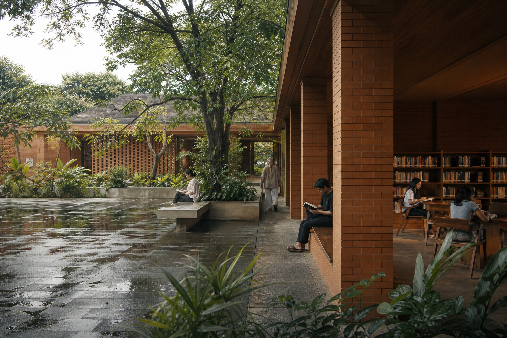

Slow looking / gallery walk
Small group walk through the current photographic programme. Step-free route available.

Plan a visit / choose a time you can keep
Choose a day and time first. The confirmation retains arrival guidance, access information, programme context, and a route to change the plan.
Small group walk through the current photographic programme. Step-free route available.
Bring a publication, leave with a new reading route. Seating can be requested.
Seated audio work; arrive 10 minutes early for the accessible route.
Opening hours, ticket timing, weather context, and programme stay visible before travel.
Step-free routes, seating, sensory context, and assistance requests are part of ticket choice.
A confirmation keeps the time, arrival details, and route to change or cancel a visit.